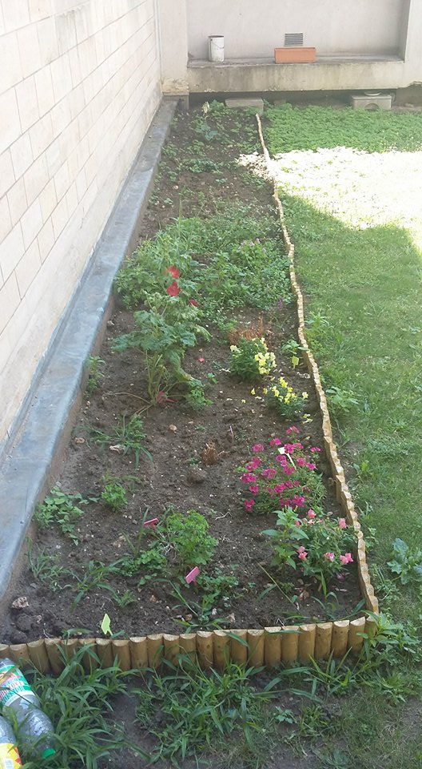
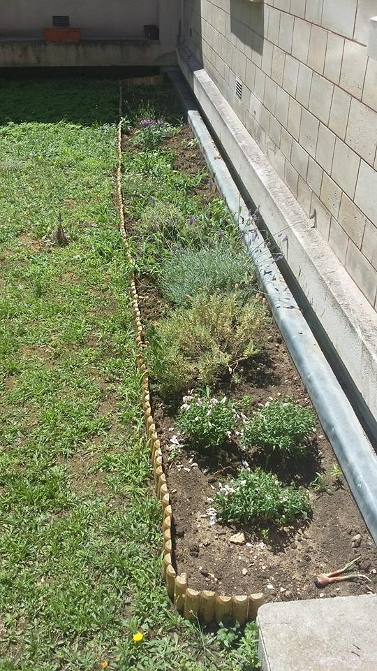

| ◄◄ CLUB PRECEDENT | RETOUR A LA PAGE DE PRESENTATION | CLUB SUIVANT ►► |
| CLUB JARDINAGE Le club jardinage est l'occasion de participer à la végétalisation de la ville au sein même du lycée ! Organisé par plusieurs classes de germanistes et par leur professeur Mme TOUYA, le club entretient le jardin situé près de la M118 et de la salle EXAO. Les élèves s'occupe de planter, d'arroser, de tailler, bref de garder en vie et de faire croître toutes les belles fleurs et plantes du petit jardin ! Mais ce club est également l'occasion de vous amiliorer en allemand et d'étendre votre vocabulaire (surtout en ce qui concerne les plantes et l'écologie) dans une athmosphère agréable. Après tout, il n'y a pas mieux pour se détendre au cours d'une journée longue et fatiguante qu'en prenant un bon bol d'air frais (voire très frais en hiver) ? Pas besoin d'avoir la main verte pour y prendre part, simplement un peu de motivation ! De plus, le club gère un blog en allemand sur lequel on retrouve le "journal de bord" du jardin, il est donc possible de participer au club par le biais du blog en aidant à sa programmation, la mise en page des articles etc. BLOG : le blog est actuellement en reconstruction du fait d'un changement de plateforme. Pour plus d'infos sur le club et le jardin, rentrez en contact avec l'un des élèves germanistes s'en occupant ou Mme TOUYA. |
|  |  |